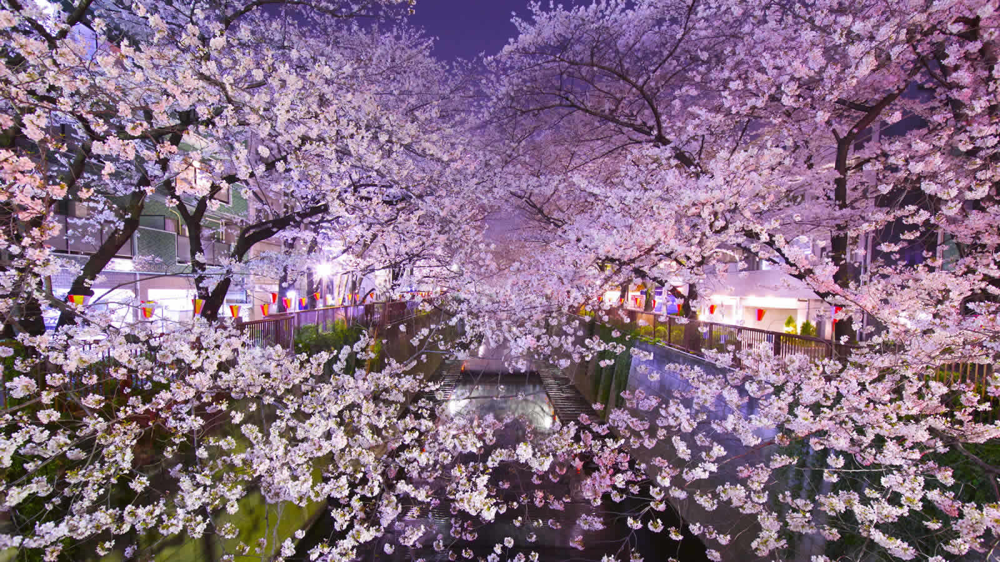
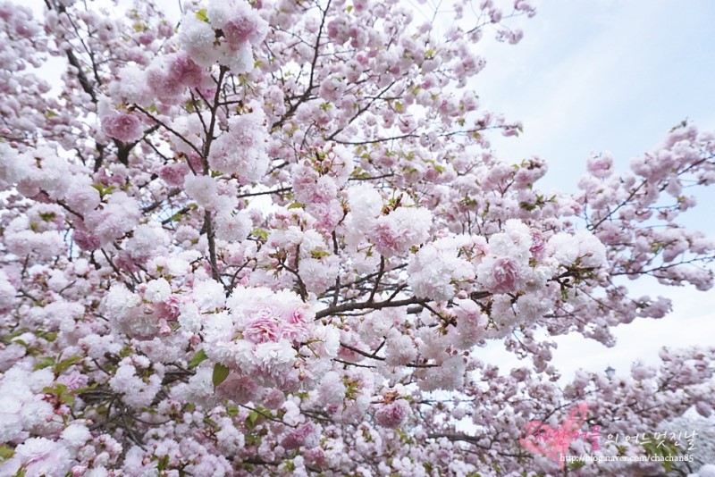

일본 3大 축제 중 하나인 기온마츠리는 7월 내내 거의 매일 있는 이벤트입니다. 기온마츠리의 하이라이트는 '야마보코준코(山鉾巡行)'입니다. '야마(山)'와 '호코(鉾)'라는 수레를 끄는 행렬이 교토의 중심가를 순회합니다. 야마보코준코는 기온마츠리 중 2번, 17일과 24일에 있어요. 17일은 사키마츠리(前祭)라고 불리고 23개의 수레를 끌어요. 그리고 24일은 아토마츠리(後祭)라고 불리고 10개의 수레를 끌어요.
밤에 열리는 전야제도 멋져요. 7월 14일부터 16일 사이에 열리는 요이야마(宵山)는 야마보코(기온마츠리에서 사용되는 수레)에 제등을 달아놓은 전야 이벤트입니다. 특히 마지막 날에는 꼭 가보실 것을 추천해요. 마지막 날에는 축제의 음악 소리가 최고조에 달했을 때 제등의 불이 일제히 꺼지고, '둥'하는 소리와 함께 제등이 일제히 땅으로 떨어지는 피날레를 볼 수 있어요.
일본의 수도 도쿄에서 열리는 간다 마츠리는 매년 5월 15일과 가장 가까운 주말 동안 열리는 축제로 에도 시대에 벌어진 세키가하라 전투의 승리를 기념하기 위해 열린 축제에서 유래했다고 해요. 이 마츠리는 서민들의 마츠리로 인기가 좋답니다. 가마 행진이 간다 마츠리의 백미인데요, 300여 명의 사람이 가마를 지로 도쿄 중심부를 가로질러 행진합니다. 단, 이 가마 행진은 홀수 년에만 한다고 하니 방문 시 참고하세요.
에도(도쿄의 옛 지명) 3대 축제 및 일본3 대 축제의 하나로 꼽히는 성대한 마쓰리(축제)입니다. 6일간에 걸쳐 펼쳐지는 행사 중에서도 간다, 니혼바시, 오테•마루노우치, 아키하바라 지역을 신위가마가 지나가는 ‘신코사이’ 및 100개의 우지코마치(신사의 신자들 지역) 신위가마가 미야이리(신사에 들어감) 참배하는 ‘신위가마 미야이리’가 열리는 이틀간은 특히 많은 사람들이 모여든 가운데 박력이 넘치는 축제 행렬을 즐길 수 있습니다.
맛집 투어가 가능한 오사카에 봄이 찾아오면 벚꽃놀이도 만끽할 수 있어 눈과 입이 모두 즐거워진다. 이곳에서 가장 인기가 많은 벚꽃 명소는 오사카 조폐국. 평소에는 폐쇄된 곳이지만 벚꽃 시즌에만 특별히 개방되어 더욱 특별하다. 아직 2018년도 개방 일정은 나오지 않았지만 작년에는 4월 11일부터 17일까지였으니 참고하자. 그 밖에도 오사카 성, 게마사쿠라노미야 공원도 사랑받는 오사카 벚꽃 명소.
도쿄는 벚꽃 명소가 다양해 여행 기간에 충분히 벚꽃을 만끽할 수 있어 매력적인 여행지. 올해는 작년보다 3일 늦은 3월 24일에 개화할 것으로 예측하고 있다. 신주쿠 공원, 이노카시라 공원, 나카메구로, 리쿠기엔 등 도심에 큰 규모의 공원이 많아 벚꽃을 즐기기에 딱 좋다. 대부분 밤에 조명을 비추는 라이트업 축제를 여니 참고하자. 또 한가지, 신주쿠 공원과 에바라 신사에서는 한겨울 피는 벚꽃, 칸자쿠라를 만날 수 있으니 다음 겨울 여행에 만나보는 것은 어떨까?
삿포로가 속한 홋카이도는 라벤더 축제가 가장 유명하지만 여름까지 기다릴 수만은 없는 법! 봄 벚꽃부터 만나보자. 벚꽃 시즌에는 특별히 취사가 가능한 공원이 많아 벚꽃 나무 및 고기 파티를 즐길 수도 있다. 홋카이도 신궁은 1400여 그루의 커다란 벚나무가 여행객을 맞이하는데 매화나무도 함께 심어져 있어 벚꽃과 매화를 함께 즐길 수 있어 특별하다. 그리고 홋카이도 구청사는 규모는 작지만 빨간 벽돌 건물과 진한 벚꽃이 인상적이니 놓치지 말자. 마루야마 공원, 나카지마 공원도 빼놓을 수 없는 삿포로 벚꽃 명소.

점점 친숙해지는 일본 소도시 여행지, 나가사키에서도 벚꽃여행을 빼놓을 수 없다. 나가사키 벚꽃 개화 시기는 작년보다 약 일주일 이른 3월 22일로 예측된다. 이곳은 평균 일주일 후 벚꽃이 만개하니 참고하자. 700여 그루의 벚나무가 심어져 있는 다테야마 공원과 시내와는 다소 떨어졌지만 놓칠 수 없는 오무라 공원이 나가사키 벚꽃 명소. 야경으로도 유명한 이나사야마 공원 역시 아름다운 벚꽃이 피니 방문해보자.